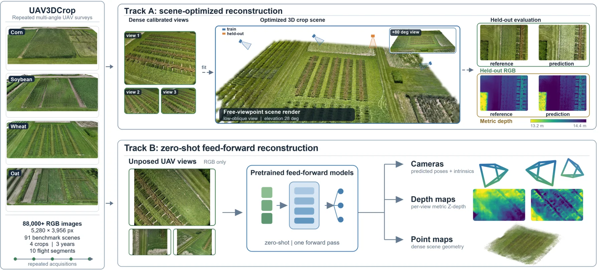
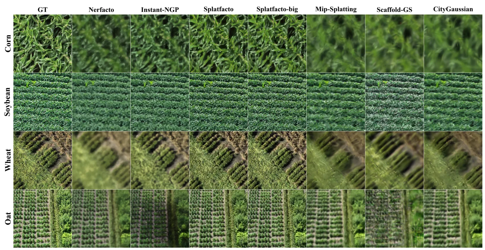
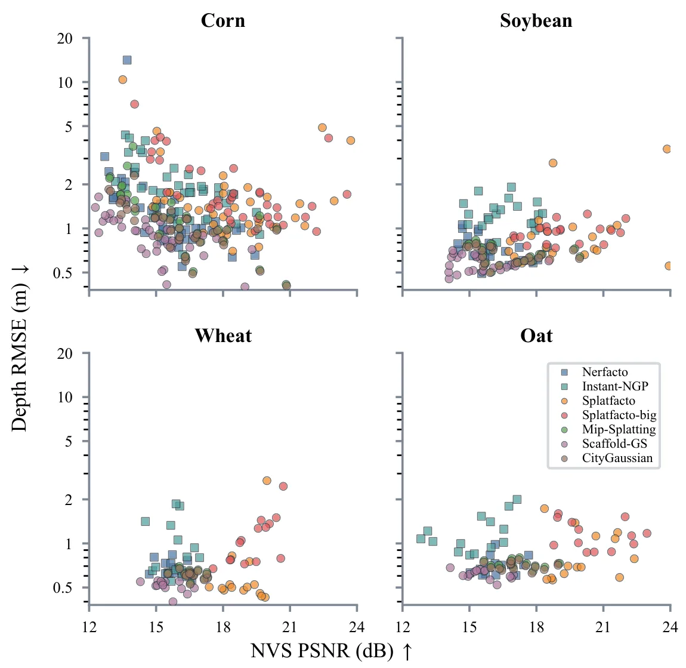
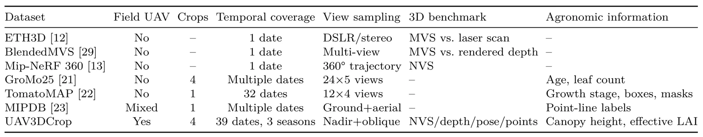
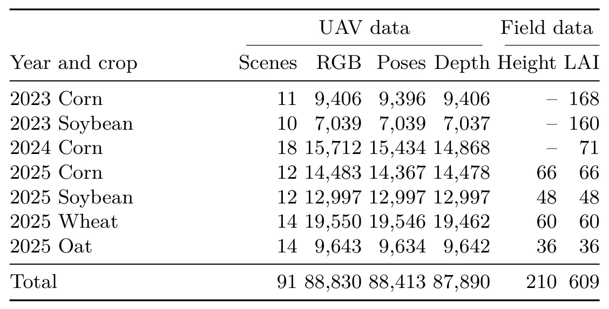
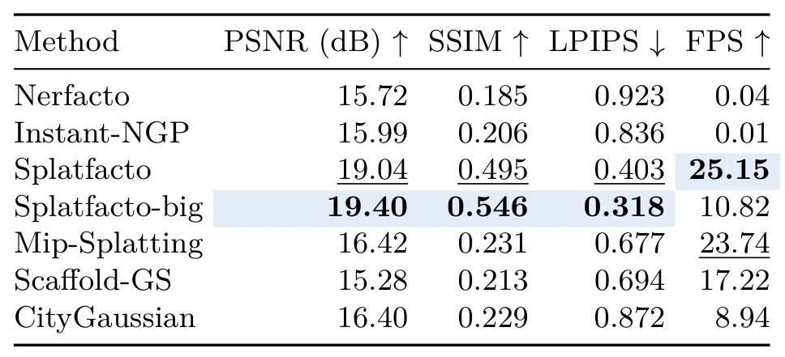
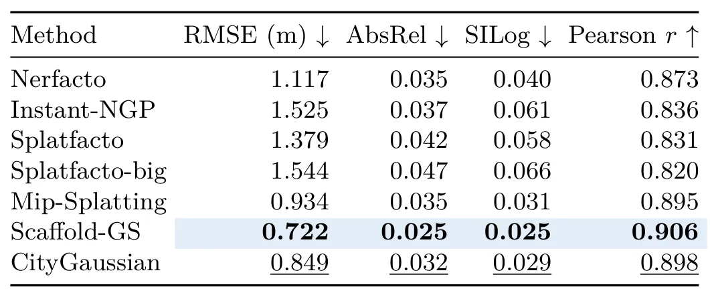
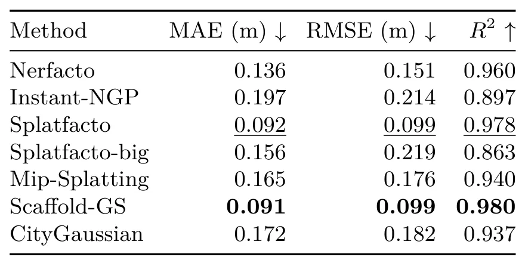
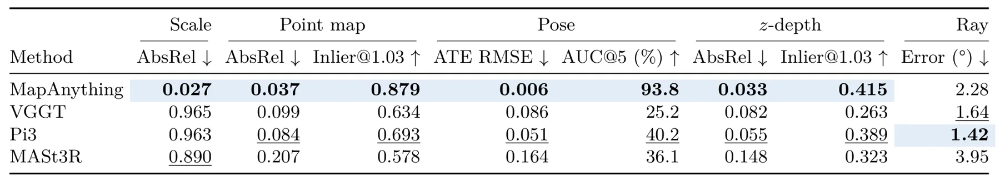

UAV3DCrop：重复多角度无人机作物航测三维重建基准UAV3DCrop: Benchmarking 3D Reconstruction in Repeated Multi-Angle UAV Crop Surveys
直接覆盖 SfM/三维重建、3DGS、相机位姿与 metric scale，数据规模大且指标具有测量意义；摄影测量参考与跨期采集偏差仍需核查。
一句话工作总结
用重复 UAV 农田航测同时检验外观、深度、冠层高度、位姿和绝对尺度，揭示 3DGS/NeRF 的渲染优势并不等于测量几何可用。
摘要
UAV3DCrop 是面向重复、多角度无人机作物航测的公开三维重建基准，包含 91 个玉米、大豆、小麦和燕麦场景的 88,830 张 5280×3956 RGB 图像，地面采样距离为 3.6–5.8 mm。Track A 比较 NeRF 与 3DGS 场景优化方法在新视图、摄影测量参考深度和冠层高度上的表现；Track B 测试四个预训练前馈模型的零样本相机位姿与几何估计。不同目标的最佳方法并不一致，且四个前馈模型中只有一个恢复了可用的绝对尺度，说明对齐会掩盖严重的 metric-scale 失效。
Accurate 3D crop monitoring underpins data-driven precision agriculture by enabling field-scale analysis of plant structure, growth dynamics, and management response. Modern 3D reconstruction methods perform strongly on generic benchmarks, but rendered appearance may not translate into metrically and agronomically useful geometry in crop fields. We introduce UAV3DCrop, a public benchmark of repeated multi-angle unmanned aerial vehicle (UAV) crop surveys. It contains 88,830 RGB images at $5280 \times 3956$ pixels, with a ground sampling distance of 3.6-5.8 mm, from 91 scenes spanning corn, soybean, wheat, and oat. Track A evaluates seven scene-optimized methods -- Neural Radiance Field (NeRF) and 3D Gaussian Splatting (3DGS) variants -- on held-out views, photogrammetry-referenced depth, and canopy-height recovery. Track B tests four pretrained feed-forward models on zero-shot camera-pose and geometry estimation. The scene-optimized methods rank differently across the three targets: Splatfacto-big leads appearance, whereas Scaffold-GS leads depth and is statistically tied with Splatfacto for canopy height. Among feed-forward models, MapAnything leads on seven of the eight metrics, while the remaining models vary more across crops and fail severely on absolute scale in a way that alignment conceals. Repeated acquisitions reveal further sensitivities that differ by output type and by model, associated with position within the acquisition sequence and with tie-point multiplicity. Current 3D reconstruction methods are therefore not yet interchangeable for agronomic use: no single method wins on appearance, geometry, and canopy height at once, and only one of four feed-forward models recovers usable metric scale. The dataset is publicly available at https://link-dev.github.io/UAV3DCrop/
中文解读摘录
- 价值：91 个场景、88,830 张高分辨率 RGB 图像，跨玉米、大豆、小麦和燕麦，对 NeRF、3DGS 及前馈三维模型同时评估外观、参考深度、冠层高度、相机位姿与绝对尺度。
- 关键发现：Splatfacto-big 在外观上领先，Scaffold-GS 在深度上领先；没有方法同时赢得外观、几何和冠层高度。四个前馈模型中只有一个恢复了可用的 metric scale，说明对齐后的指标可能掩盖绝对尺度失效。
- 关注点：非常适合用于检查 3DGS/NeRF 是否具有测量学价值；后续应核查摄影测量参考精度、跨日期位姿一致性、tie-point multiplicity 与场景序列位置的因果关系。
- 链接：arXiv · PDF · 项目页
图表/页面预览
{kind=link}

{kind=link}

{kind=link}

{kind=link}

{kind=link}

{kind=link}

{kind=link}

{kind=link}

{kind=link}
